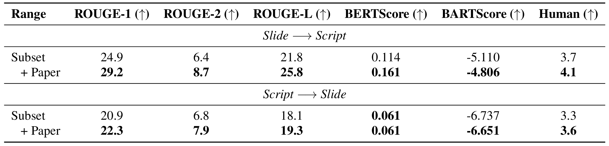

Publishing open-source academic video recordings is an emergent and prevalent approach to sharing knowledge online. Such videos carry rich multimodal information including speech, the facial and body movements of the speakers, as well as the texts and pictures in the slides and possibly even the papers. Although multiple academic video datasets have been constructed and released, few of them support both multimodal content recognition and understanding tasks, which is partially due to the lack of high-quality human annotations.
In this paper, we propose a novel multimodal, multigenre, and multipurpose audio-visual academic lecture dataset (🎓M3AV), which has almost 367 hours of videos from five sources covering computer science, mathematics, and medical and biology topics. With high-quality human annotations of the slide text and spoken words, in particular high-valued name entities, the dataset can be used for multiple audio-visual recognition and understanding tasks.
Evaluations performed on contextual speech recognition, speech synthesis, and slide and script generation tasks demonstrate that the diversity of 🎓M3AV makes it a challenging dataset.
Figure 1: The overview of 🎓M3AV dataset.
Figure 2: Statistics of 🎓M3AV dataset.
Table 1: Comparison with other academic lecture-based datasets in terms of data types and designed tasks. "A" denotes fully automated processing and "M" denotes fully or partially manual labelling.
Table 2: Comparison with other academic lecture-based datasets in terms of data size and availability.
Table 3: Evaluation results on ASR and CASR tasks.
Table 4: Evaluation results on Spontaneous TTS task. “GT” denotes the ground truth.
Table 5: Evaluation results on SSG tasks. The upper part of “Slide→Script" shows cascading pipelines, while the lower part shows integrated systems.
(3) RAG substantially enhances the generation, as shown in the improvement after the introduction of paper information.
Table 6: Performance improvements of LLaMA-27B brought by retrieving paper information. “Subset” denotes that only Computer Science videos are contained in all sets for they are the only ones with downloadable papers.
We release the Multimodal, Multigenre, and Multipurpose Audio-Visual Dataset with Academic Lectures (🎓M3AV) covering a range of academic fields. This dataset contains manually annotated speech transcriptions, slide text, and additional extracted papers, providing a basis for evaluating AI models for recognizing multimodal content and understanding academic knowledge. We detail the creation pipeline and conduct various analyses of the dataset. Furthermore, we build benchmarks and conduct experiments around the dataset. We find there is still large room for existing models to improve perceptions and understanding of academic lecture videos.
@article{chen2024m3av,
title={{M\textsuperscript{3}AV}: A Multimodal, Multigenre, and Multipurpose Audio-Visual Academic Lecture Dataset},
author={Chen, Zhe and Liu, Heyang and Yu, Wenyi and Sun, Guangzhi and Liu, Hongcheng and Wu, Ji and Zhang, Chao and Wang, Yu and Wang, Yanfeng},
journal={arXiv preprint arXiv:2403.14168},
year={2024}
}